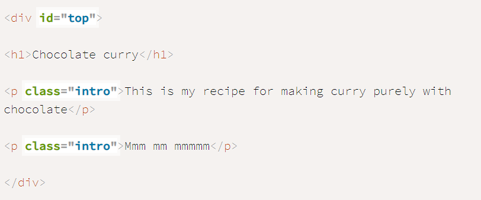

Both Classes and IDs are used as HTML selectors to implement CSS on the respective elements. Because IDs - once made can only be used for a unique html element, whilst classes once made can be added to many elements. This means that as best practive you should only ever use IDs for a chosen element that you wish to be uniquely changed.
In the example above we see that class selector is used multiple times. Whatever change made in the css stylesheet will be reflected in html elements denoted that class name. Whereas the ids selector is used only once because a unique change in the stylesheet will only be used for the html element that has been given the id.